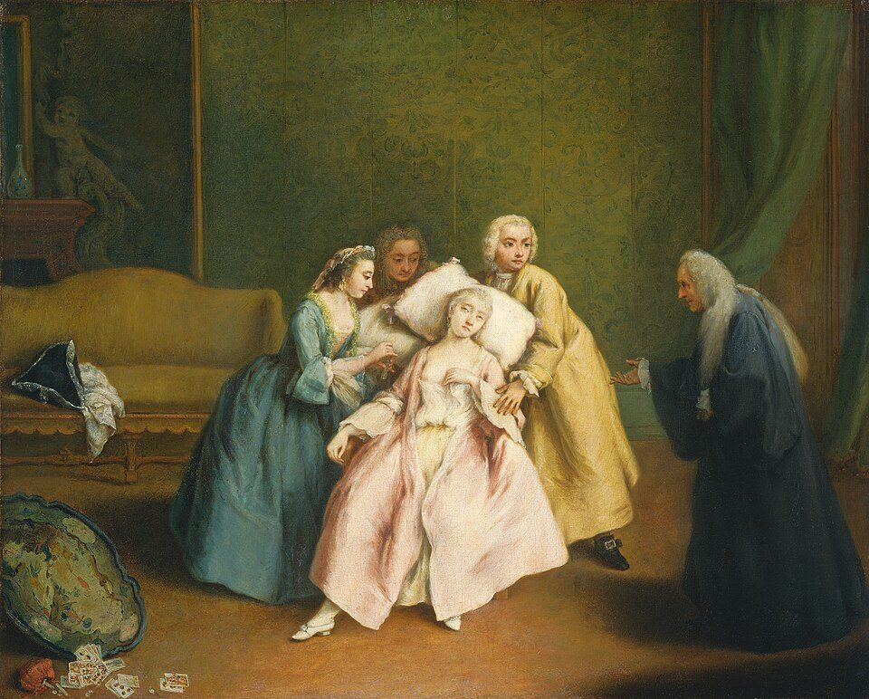
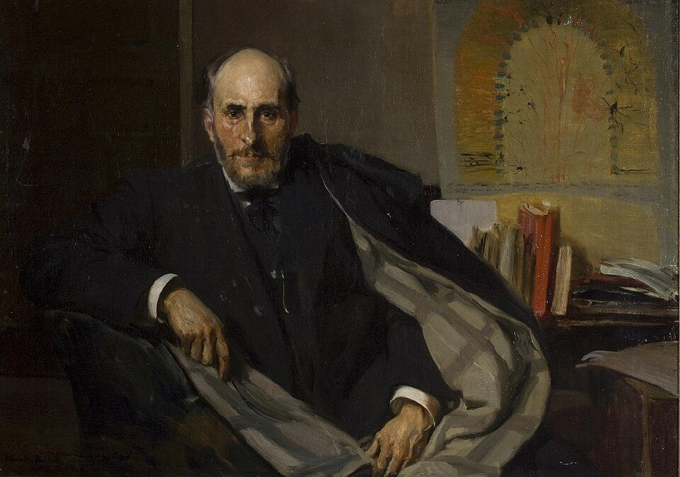

A universe inside your brain. Explained with rigour.
Conditions, diagnosis and treatment of the nervous system: stroke, migraine, epilepsy, dementia, Parkinson's, multiple sclerosis and peripheral nerves. Plus how the brain works and how to look after it. With sources on every page.
Try (in Spanish):
1888: Santiago Ramón y Cajal showed that the brain is made of independent cells, the neurons.
 Nobel 1906Santiago Ramón y Cajal
Nobel 1906Santiago Ramón y Cajal
ConditionsSíncopeImage: Pietro Longhi · Public domain · Wikimedia Commons Brain healthLos 14 factores de riesgo de demencia que se pueden cambiarImage: Alice Barber Stephens · Public domain · Wikimedia Commons
Brain healthLos 14 factores de riesgo de demencia que se pueden cambiarImage: Alice Barber Stephens · Public domain · Wikimedia CommonsSantiago Ramón y Cajal (1852-1934), father of modern neuroscience and Nobel laureate in 1906. Photo: public domain, via Wikimedia Commons.
_portrait_(restored).jpg){kind=link}
Conditions. Diagnosis. Treatment.
Three connected paths: understand what is happening, learn how it is investigated and know the options for treatment and rehabilitation.
 Conditions
ConditionsNeurological conditions
Stroke, migraine, epilepsy, Alzheimer's, Parkinson's, multiple sclerosis, ALS, neuropathies and more.
42 articles → Diagnosis
DiagnosisFrom suspicion to testing
Neurological examination, CT, MRI, EEG, EMG, lumbar puncture, PET, genetics and memory tests.
11 articles → Treatments
TreatmentsTreat, rehabilitate, support
Thrombolysis and thrombectomy, antiseizure medicines, levodopa, deep brain stimulation, anti-CGRP drugs and rehabilitation.
14 articles →What do you need today?
Conditions from A to Z
Before and after the result
Time
is brain.
In a major stroke, about two million neurons are lost every minute. Recognising it, calling the emergency number and reaching a hospital with a stroke unit in time changes the outcome. Everything you need to know, from prevention to rehabilitation.
StrokeStroke: from emergency to recovery
How to recognise it, which treatments exist, how care is organised and how it is prevented.
Six doors into neurology
 Anatomy
AnatomyA map of the nervous system
Neurons, synapses, glia, cortex and lobes, cerebellum, basal ganglia, brainstem, spinal cord and nerves.
17 articles → Brain and mind
Brain and mindHow the brain works
Memory, sleep, pain, plasticity, language, vision, emotion, consciousness and development.
12 articles →
PeopleThe people behind neurology
Anatomists, clinicians, physiologists and patients who built neurology.
30 articles → Brain health
Brain healthCaring for your brain
Exercise, sleep, diet, blood pressure, hearing, alcohol, screens, helmets and stress.
12 articles → FAQ
FAQFrequently asked questions
Short, clear answers about stroke, headache, memory, epilepsy and more.
10 articles →A scan is not
a diagnosis.
Many MRI scans show small spots, cysts or incidental findings of no importance. A normal EEG does not rule out epilepsy and an abnormal one does not always confirm it. That is why we explain what each test means and what it does not.
MRI scanWhen not to wait
A drooping face, an arm that will not move or difficulty speaking; a sudden, explosive headache; a seizure lasting more than five minutes; fever with a stiff neck. These are emergencies. Call 112 (or your local emergency number).
How to recognise a strokeDiscoveries that changed neurology
Cajal and the neuron doctrine
Santiago Ramón y Cajal shows that the nervous system is made of independent cells that communicate by…
Auguste D. and Alzheimer's
Alois Alzheimer presents the case of a 51-year-old woman with dementia and describes the plaques and tangles in her…
The CT scan
The first CT scan of a patient is performed in London, to study a brain…
Thrombectomy
Five trials show that removing the clot with a catheter drastically reduces disability after a major…
Latest posts
· in SpanishAsí nace Neurolopedia
Una enciclopedia en español sobre el cerebro y el sistema nervioso, sus enfermedades, sus pruebas y sus tratamientos, con fuentes en cada página.
Read → · in SpanishCatorce factores para proteger la memoria
La Comisión Lancet calcula que casi la mitad de los casos de demencia se podrían prevenir o retrasar actuando sobre catorce factores de riesgo. Cuáles son y qué hacer en cada etapa de la vida.
Read → · in SpanishCajal, la foto de la portada
La imagen que abre Neurolopedia es un retrato de Santiago Ramón y Cajal, el investigador que demostró que el cerebro está hecho de neuronas. Qué hay detrás de él.
Read →Review and play
Advances with clinical context
Links to the original sources, with what to look for in each. A study existing does not mean a treatment is available.
WHO global report
More than a third of the world's population lives with a neurological condition. Burden, access to care and action plans.
WHO · Brain health ↗See · ClinicalTrials.govClinical trials
Check the design, phase, who is included, the comparison and the results before calling it a breakthrough.
ClinicalTrials.gov ↗See · PubMedRecent publications
Alzheimer's, Parkinson's, stroke, epilepsy and neuroimmunology. Tell lab studies, trials and reviews apart.
PubMed ↗Created by a family doctor
Alejandro Rosàs, a family physician with over 38 years in primary care and a specialist in Preventive Medicine and Public Health. Licensed in Barcelona, no. 28574.
No miracles, no alarmism
No «memory-boosting» supplements, no «brain training» that prevents Alzheimer's, no tests without a reason. We explain the evidence, its limits and when to see a doctor.